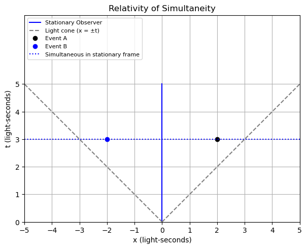
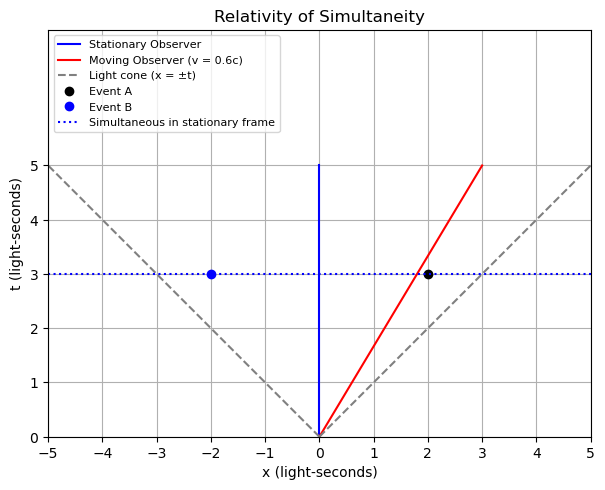
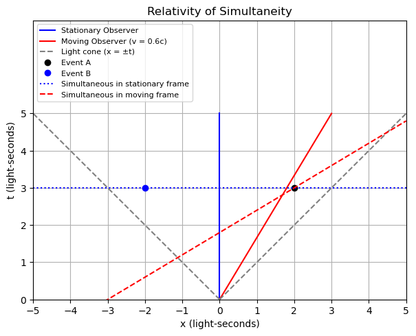

A3.7 Spacetime Diagram: Relativity of Simultaneity#
A3.7.1 Introduction#
In Newtonian physics, simultaneity is absolute: all observers agree on what events happen at the same time.
In special relativity, simultaneity is relative. What appears simultaneous in one frame may not be in another.
A stationary observer sees simultaneous events along horizontal lines (constant \(t\)).
A moving observer sees simultaneous events along tilted lines.
The Tilted Simultaneity Line (Moving Observer)#
To understand this, recall the Lorentz transformation for time:
To find the set of events that the moving observer considers simultaneous with Event A, we fix \(t'\) to be the same as at Event A:
\[ t' = t'_A = \gamma(t_A - v x_A) \]Solving for \(t\), we get:
\[ t = \frac{t'_A}{\gamma} + v x_A \]
This is a line in spacetime:
It has slope \(v\).
It passes through Event A.
It shows the moving observer’s “now” — what they consider to be simultaneous events.
In contrast, the stationary observer defines simultaneity with horizontal lines (constant \(t\)), while the moving observer uses tilted lines (constant \(t'\)).
This is the heart of the relativity of simultaneity:
Different observers slice spacetime into “now” in different ways.
This leads to one of the most profound results in relativity: time itself depends on the observer’s motion.
A3.7.2 Example: Are Events A and B Simultaneous?#
Two events occur at the same coordinate time \(t = 3\) (in light-seconds) in a stationary frame:
Event A occurs at \(x_A = 2\)
Event B occurs at \(x_B = -2\)
An observer moves at velocity \(v = 0.6c\) in the \(+x\) direction.
Are these two events simultaneous in the moving observer’s frame?
Spacetime Diagram Solution - Step-by-Step#
Step 1: Two Events#
Let us begin by plotting two events in the frame of a stationary observer (sometimes called the “lab frame”):
Event A occurs at \(x = 2\) light-seconds and \(t = 3\) seconds.
Event B occurs at \(x = -2\) light-seconds and \(t = 3\) seconds.
These events occur at different positions, but at the same time according to the stationary observer. They lie on the same horizontal line.
We now plot them as dots in spacetime.
🐍 Jupyter Code Cell: Plot Events A and B

Step 2: Adding the Worldline of the Moving Observer#
To understand how different observers experience events, we must consider their motion through spacetime.
In a spacetime diagram:
An observer who is stationary remains at the same position (\(x = \text{constant}\)), so their worldline is a vertical line.
An observer who is moving has position \(x\) that changes with time \(t\). Their worldline is a tilted line.
Moving Observer’s Worldline#
Suppose we have an observer moving at velocity \(v = 0.6c\) to the right.
In the stationary frame, this observer’s position changes according to:
This line is the worldline of the moving observer — it shows where they are at every moment in the stationary frame.
We now add this worldline to the previous diagram.
🐍 Jupyter Code Cell: Add Worldline of Moving Observer

Interpreting the Spacetime Diagram So Far#
At this stage, our spacetime diagram includes:
Two events, A and B, that occur at different positions but at the same time (\(t = 3\)) in the stationary frame.
The worldline of a moving observer traveling at \(v = 0.6c\) to the right.
What the Worldline Tells Us#
The red line plotted as \(x = 0.6 t\) shows the path through spacetime of the moving observer as seen by the stationary observer.
This tells us:
At \(t = 1\) second, the moving observer is at \(x = 0.6\) light-seconds.
At \(t = 3\) seconds, they are at \(x = 1.8\) light-seconds.
At \(t = 5\) seconds, they are at \(x = 3.0\) light-seconds.
This line represents the physical position of the moving observer at every moment, according to the stationary observer’s measurements of space and time.
Step 3: Adding the Moving Observer’s Simultaneity Line#
So far, we have:
Plotted two events, A and B, that occur simultaneously at \(t = 3\) s in the stationary frame.
Added the worldline of a moving observer traveling at \(v = 0.6c\), given by \(x = vt\).
Now we explore how the moving observer perceives simultaneity.
Simultaneity in Special Relativity#
In special relativity, simultaneity is relative. Observers in different frames do not agree on whether two spatially separated events happen at the same time.
Each observer slices spacetime differently:
The stationary observer uses horizontal lines of constant \(t\) to define “now”.
The moving observer uses tilted lines of constant \(t'\) — these are not horizontal in the \(x\)–\(t\) diagram.
We will now draw the line of constant \(t' = 2.25\) s that passes through Event A, as perceived by the moving observer.
Lorentz Transformation (Inverse)#
We use the inverse Lorentz transformation to relate \((x, t)\) in the stationary frame to \((x', t')\) in the moving frame:
This equation gives the tilted line of simultaneity for a constant \(t'\).
Example: Line of Constant \(t' = 2.25\) Through Event A#
Let us compute \(t'\) for Event A, which is located at \((x = 2,\ t = 3)\) in the stationary frame.
With \(v = 0.6c\) and \(\gamma = \frac{1}{\sqrt{1 - v^2}} = 1.25\):
So in the moving frame, Event A occurs at \(t' = 2.25\) s.
Now, we find the set of points \((x, t)\) that satisfy:
This is a straight line tilted upward and to the right — all points on this line are simultaneous with Event A in the moving observer’s frame.
We now add these lines of simultaneity for event A to the previous diagram.

Interpreting the Diagram with Moving Observer’s Simultaneity Line#
In this diagram, we’ve added the line of constant \(t' = 2.25\) s, representing a slice of “now” for the moving observer (traveling at \(v = 0.6c\)).
Let’s interpret what this line tells us.
Meaning of the Dashed Red Line#
This dashed red line is not horizontal — unlike the line of simultaneity in the stationary frame — because simultaneity is relative in special relativity.
This line is defined by:
Every point along this line occurs at \(t' = 2.25\) s in the moving frame.
Key Interpretation#
To the stationary observer, Events A and B both occur at \(t = 3\) s and are simultaneous.
But the moving observer sees them happening at different \(t'\) values:
Event A lies on the \(t' = 2.25\) line → it occurs at \(t' = 2.25\) s.
Event B lies off the line → it occurs at a different time in the moving frame.
So, from the moving observer’s point of view:
Events A and B are not simultaneous.
This is a direct visual demonstration of the relativity of simultaneity.
Geometric Summary#
In the stationary frame, simultaneity means horizontal slices of constant \(t\).
In the moving frame, simultaneity corresponds to tilted lines of constant \(t'\).
These slices tilt toward the direction of motion, and their angle depends on the observer’s velocity.
This diagram helps us see that simultaneity is not absolute — it depends on your state of motion.